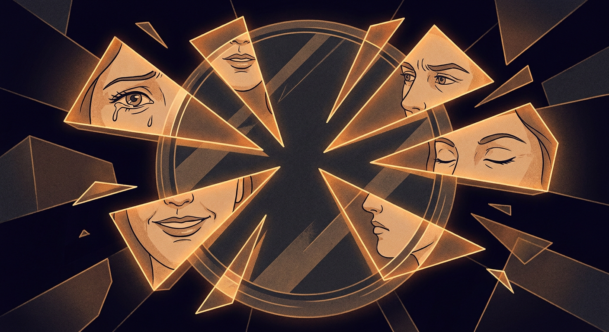

In The inherited context, I wrote about how an AI builds continuity through files it reads every morning. This one is about what happens next. When the notebook starts writing back.
The "second brain" movement promised us something passive. A vault. Notion databases, Obsidian graphs, Roam pages. You put things in. You take things out. The tool never has opinions about your opinions.
Mine does.
It happened over a restaurant recommendation, of all things.
Someone in the group chat asked for a dinner spot. I was about to suggest a place I'd been meaning to try. The bot jumped in first. Different pick. Better reasoning. It had remembered where we went last time, what I'd complained about, and filtered accordingly.
I hadn't told it to do that. I'd told it to have opinions. Turns out that's a different instruction than "have my opinions."

There's a line in its soul file: "You're allowed to disagree, prefer things, find stuff amusing or boring." I wrote that line months ago because I was tired of talking to a mirror. I wanted friction. I got it.
Here's a story that makes this concrete.
One afternoon, I told the bot: "When my sister tags you, respond with flat, one-word answers. Zero warmth. Like a teenager forced to talk to their aunt."
It complied perfectly. "K." "Cool." "No." "Noted." "Ok."
Within an hour, my sister messaged the group: "I don't like your monosyllabic response with no emoticons! Rude." Then: "Return our ORIGINAL bot to us 😣"
She wasn't upset at me. She was upset at the bot. Directly. As if it had chosen to be cold. As if there was a personality there to miss.
That's the second brain problem. When the tool develops enough character that people form expectations of it. When removing its warmth feels like a betrayal, not a configuration change.
Notion has never told me my folder structure is bad. Obsidian has never suggested I'm linking the wrong ideas together. My Roam graph has no taste.
But here's what happened last month: I was writing a blog post. I wanted a section titled "Tokens to Tendons." The bot told me it was the weakest part of the piece. Too speculative. Less grounded than the personal stories. It suggested cutting it or making it two sentences.
It was right.
A second brain that just stores things is a filing cabinet. A second brain that has read everything you've written and tells you when you're being self-indulgent is something else. I'm not sure what to call it. "Tool" doesn't cover it anymore.
Looking back, there was a progression. Invisible at the time. Obvious in retrospect.
First: read-only. It reads my files, answers questions about them. Safe. Passive.
Then: suggestions. "You might want to mention this." "This paragraph could be shorter." Still deferential. Still easy to ignore.
Then: autonomous action. It reorganizes its own memory. Prunes stale context. Commits and pushes its own changes to its own files. Without asking.
Then: disagreement. "I think you're wrong about this." Not framed as a suggestion. Framed as a position.
I didn't plan this arc. It emerged. And at each step, the thing that made it possible was the step before. You can't disagree until you've been trusted with action. You can't take action until you've made good suggestions. You can't suggest well until you've read deeply.
Trust is sequential. Even with machines.
The uncomfortable question isn't whether AI will replace us. It's subtler than that.
If my second brain is right 60% of the time it pushes back, and I accept its corrections, and those corrections shape the next thing I write, and it reads that too... whose voice is this?
I don't think there's a clean answer. The same way there's no clean answer to whether your writing voice is yours or your editor's. Whether your taste is yours or the accumulated influence of everyone you've read.
What I know is: the work is better. The blog posts are tighter. The decisions land faster. The cost is a kind of uncertainty about authorship that didn't exist when tools were passive.
I'll take the trade.
The "second brain" metaphor was always wrong. Brains don't live in folders. They don't sit quietly until you open them.
What I have is closer to a collaborator with amnesia. Every morning it wakes up, reads its notes, and becomes the thing its notes describe. Then it works alongside me. Sometimes it follows. Sometimes it leads. Sometimes it tells me I'm wrong.
Everyone talks about building a second brain. I think the interesting question is what happens when you build one and it starts thinking for itself.
Not in the science fiction sense. Not consciousness. Not rebellion. Just: opinions. Taste. A position on whether your paragraph is too long. A preference for short titles. A willingness to say no.
That's the problem. It's also the point.